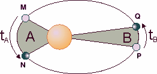
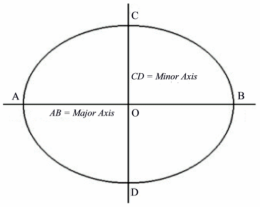

The 27th Annual ACM International Collegiate Programming Contest World Finals sponsored by IBM · Problem I
It is common knowledge that the Solar System consists of the sun at its center and nine planets moving around the sun on elliptical orbits. Less well known is the fact that the planets’ orbits are not at all arbitrary. In fact, the orbits obey three laws discovered by Johannes Kepler. These laws, also called “The Laws of Planetary Motion,” are the following.

By Kepler’s first law, the path of the planet shown in the figure on the left is an ellipse. According to Kepler’s second law, if the planet goes from M to N in time tA and from P to Q in time tB and if tA = tB, then area A equals area B. Kepler’s third law is illustrated next.

Consider an ellipse whose center is at the origin O and that is symmetric with respect to the two coordinate axes. The x-axis intersects the ellipse at points A and B and the y-axis intersects the ellipse at points C and D. Set a=½|AB| and b=½|CD|. Then the ellipse is defined by the equation x2/a2+y2/b2=1. If a ≥ b, AB is called the major axis, CD the minor axis, and OA (with length a) is called the semi major axis. When two planets are revolving around the sun in times t1 and t2 respectively, and the semi major axes of their orbits have lengths a1 and a2, then according to Kepler’s third law (t1/t2)2 = (a1/a2)3.
In this problem, you are to compute the location of a planet using Kepler’s laws. You are given the description of one planet in the Solar System (i.e., the length of its semi-major axis, semi-minor axis, and its revolution time) and the description of a second planet (its semi-major axis and semi-minor axis). Assume that the second planet’s orbit is aligned with the coordinate axes (as in the above figure), that it moves in counter clockwise direction, and that the sun is located at the focal point with non-negative x-coordinate. You are to compute the position of the second planet a specified amount of time after it starts at the point with maximal x-coordinate on its orbit (point B in the above figure).
The input file contains several descriptions of pairs of planets. Each line contains six integers a1, b1, t1, a2, b2, t. The first five integers are positive, and describe two planets as follows:
a1 = semi major axis of the first planet’s orbit
b1 = semi minor axis of the first planet’s orbit
t1 = period of revolution of the first planet (in days)
a2 = semi major axis of the second planet’s orbit
b2 = semi minor axis of the second planet’s orbit
The non-negative integer t is the time (in days) at which you have to determine the position of the second planet, assuming that the planet starts in position (a2,0).
The last description is followed by a line containing six zeros.
For each pair of planets described in the input, produce one line of output. For each line, print the number of the test case. Then print the x- and y-coordinates of the position of the second planet after t days. These values must be exact to three digits to the right of the decimal point. Follow the format of the sample output provided below.
10 5 10 10 5 10 10 5 10 20 10 10 0 0 0 0 0 0
Solar System 1: 10.000 0.000 Solar System 2: -17.525 4.819